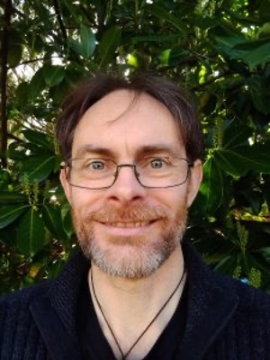

Bios 2023
Full Name – Mark Bailey
Job Title(s) – Consultant in Respiratory Medicine and Clinician-who-codes, Conference co-producer
Title of presentation - Mark has been very interested in all things digital for most of his life. His digital interests filtered into his current healthcare role when he started thinking of ways to streamline daily clinical tasks. He built a desktop app called “Spiritum”. This houses the Gloucestershire sleep, bronchiectasis and tuberculosis services. It automates the transfer of data within the trust, creating standardised clinical letters, retrieves lab and radiology reports, flagging abnormal ones for clinicians to review, etc. As part of works to improve the sleep service, the Spiritum app helped reduce the breach rate of this service by 79% over a 2-year period. A spin-off from the Spiritum app was an program called “Quick Spiritum”. This uses robotic process automation to automate and speed up routine clinical tasks. These tasks include looking up imaging (eg chest X-rays), bloods and clinical letter and requesting tests and referrals. Quick Spiritum was found to save, on average, 30% of clinician’s time on these tasks. This work has shown what is possible with automation and digitisation, and Mark’s department is keen to tackle the next big issues. Mark and his team have been working over the last one and a half years on improving the local lung cancer pathway using the knowledge gained from the above projects. Mark has two computer science placement students working with him on this project – Joe Channing and Nick Ives. Mark’s team now have a functional “proof-of-concept” app that will be showcased at the Let’s Talk Digital Conference. This app has been created in open source and in a modular fashion. By using open source and a modular build, the hope is to be able to allow other disease sites and trusts to both benefit and collaborate on this work.
Mark is also a big advocate of advancing the clinical informatics speciality. He is a board member of the Faculty of Clinical Informatics, a board member of the NHS pycom (python community) and a current student on the NHS Digital Academy PGDip Digital Academy course. He hopes to progress this to an MSc in September.
Full name – Marcus Baw
Job Title(s) – Clinical Informatician, Software Developer, GP, Director at Baw Medical Ltd
Title of presentation – Debate: “This house believes that clinicians should be allowed to directly code and create health apps” For – Marcus Baw, Clinical Informatician, Software Developer, and other roles Against – Harold Thimbleby, Professor of Computer Science, Swansea University
Dr Marcus Baw is a practicing GP and Emergency Physician in Yorkshire, UK, with a specialist interest in health informatics and health technology. He is a software developer and works exclusively on open source projects. He is also the Immediate Past Chair of the Royal College of GPs Health Informatics Group.
Full Name – Sophie Brook
Job Title(s) – member of the National Digital Shared Decision-Making Council with NHSE, member of the LND local council, MSc student in Digital Health at UCL
Title of Presentation – Sophie is an NHS Clinician who created Lister due to experiencing frustrations from paper handover lists that still saturate the NHS regardless of digital transformation. She felt the cognitive overload of trying to remember and prioritise all patients within her care and the patient safety concerns of missed or overlooked tasks. This was coupled with the lack of transparency between tasks and staff members, with various roles working from different lists, leading to delays and inefficient ways of working. Motivated to solve these problems, Sophie was accepted onto the NHS Clinical Entrepreneur programme in 2019 with the Idea of digitising this process to improve patient safety, teamwork and workflow. Fast forward to 2023, Lister is now a developed task management solution and is currently being evaluated with 4 NHS Trusts.
Sophie’s passion for digital innovation has evolved over the years and she is a member of the National Digital Shared Decision-Making Council with NHSE, a member of the LND local council and a UCL MSc student in Digital Health. She looks forward to sharing her journey from NHS Clinician turned digital Innovator at the let’s Talk Digital Conference 2023.

Full Name – Mr Kareem El-Wakeel
Job title(s) – Senior Programmer, Collaboration Digital Ltd
Title of presentation – An innovative way to streamline multidisciplinary team meetings, safely, efficiently, and digitally.
After graduating from Bristol university with a Masters in Aeronautical Engineering, Kareem decided to pursue his passion in software development and programming. As a software engineer, he applied his skills working in different industries, testing software, developing transport and journey planning apps, and medical software, building experience in web and app development as well as backend systems. Kareem is currently our chief programming officer.
Full name – Majid Kazmi
Job title(s) – Director of Innovation for Cancer and Surgery and Deputy Medical Director, Guy’s and St Thomas’ NHS Foundation Trust
Title of presentation – Digital cancer care: how to empower patients beyond the hospital walls
Majid Kazmi, B.Med.Biol, MD ChB (comm), FRCP, FRCPath, has a national profile in myeloma and bone marrow (stem cell) transplantation as well as clinical leadership in cancer. Majid is the UK lead for the EBMT (European group for Blood and Marrow Transplantation) for auto-immune disorders and has performed the largest number of these transplants in the UK. He has been involved in writing the UK myeloma and amyloidosis guidelines and is an invited speaker nationally and internationally.
Full name – Paul Landau
Job title(s) – CEO and Founder, Careology
Title of presentation – Digital cancer care: how to empower patients beyond the hospital walls
Paul Landau is the CEO and Founder of Careology, the leading digital cancer care platform. Careology’s award-winning app enables patients to navigate their cancer journey and connect them with their clinicians and community. Paul is a pioneer in the technology space – launching Fitbug in 2005, making it a highly influential player in the global wearables market. Following his wife’s cancer diagnosis he leveraged his consumer health-tech experience to change how cancer-care is delivered. Careology launched in 2019, empowering Patients and Healthcare professionals to be more in control, make decisions based on clinical rigour and help ease pressure in the system.
Full Name – Dom Main
Job Title(s) – GP and Clinical Engineer at Healthtech-1
Title of presentation – Robotic Process Automation in Primary Care
Practicing GP who came to medicine after a few years studying Physics, passionate about improving the lives of healthcare workers and patients through technology.
Full Name – Professor Joe McDonald
Job Title(s) – Medical Director at SARD JV, Sleepstation, Parsek Solutions, Ethical Healthcare
Title of presentation – 10 Lessons from 20 Years in Health IT
Joe is a consultant psychiatrist by background and sytemic family therapist. A former NHS trust Medical Director, he oversaw the digitisation of mental health records during NPfIT as national clinical lead for IT and former Medical Director of the Lorenzo Delivery Team. Joe was “let go” by NPfIT for his “career-limiting frankness”. Founding director of The Great North Care Record and longstanding crusader in the field of NHS IT usability, carried out 4 National UX surveys over 10 years. Now working as a peripatetic CCIO/MD for SME’s trying to do right by his beloved NHS.
Full Name – Kevin Monk
Job Title(s) – CEO of SARD JV, General Tinkerer.
Title of presentation – AI Beyond The Hype – a real live demo of useful things AI can do for the NHS and patients.
Kevin cofounded SARD JV with Oxleas NHS FT. He’s been hacking software together since he was 8 years old. For the last 15 years, he’s built workforce systems for the NHS in rostering, appraisal, eLeave, and capacity and demand management. SARD is taking this all to a new level thanks to AI. In this talk, we’ll get a glimpse of our inevitable future – away from the AI hype and a real-life demo of what it can actually do that’s useful. Very useful.
Full name – Anita Phung
Job title(s) – General Practitioner, Metabolic Health Doctor, Health Optimisation Clinician
Title of presentation – Robotic Process Automation in Primary Care
Anita is a recently qualified GP with a strong interest in health optimisation and digital health. She worked for an early-stage health tech start up for 2 years before taking a career break to walk Camino de Santiago (500 miles!). Anita is currently involved in various digital health-related projects whilst considering her role in the digital health space.
Full Name – Andrea Preston
Job Title(s) – Andrea Preston (MRPharmS Consultant), Head of Patient Innovation and Care at Sanius Health | Myeloma Specialist Pharmacist.
Title of Presentation – Andrea is a haematology specialist pharmacist with over 20 years’ experience in the NHS. After co-creating an app to support patients with Chronic Myeloid Leukaemia she joined Sanius Health, an award-winning, AI powered patient generated data platform with a focus on accelerating personalised medicine, drug discovery, and clinical research for cancer treatment, haematological malignancies, haematological disorders and rare diseases.
Andrea is Chair of the UK Myeloma Society Pharmacist Group and plays an active prescribing role for patients with multiple myeloma and amyloid.
Andrea is passionate about research and innovation for patient benefit. She has been an NHS Clinical Entrepreneur with NHS England and NHS Improvement’s Innovation, Research and Life Sciences group and is a member of the British Oncology Pharmacy Association’s Audit & Research Committee. Her areas of research interest include medication adherence, dosing in obesity and the use of innovative technologies to drive better outcomes for patients.
Full Name – Mr Rajesh Sivaprakasam
Job Title(s) – Robotic Renal Failure Surgeon, Lead for Robotic renal failure Surgery, Research and Education at Barts health NHS Trust
Title of presentation – Are we ready for digital Healthcare?
Mr.Rajesh Sivaprakasam is a Robotic Renal Failure Surgeon, Lead for Robotic renal failure Surgery, Research and Education at Bartshealth NHS Trust. He completed training in abdominal organ transplatation in Addenbrooke’s Hospital Cambridge and conducted research in cellular Biology at University of Cambridge. As a surgeon-scientist, he leads NIHR funded clincial trials and is the chair of Multispeciality Robotic research programme in Barts health NHS Trust. His research work is presented in many international conferences, published in peer-reviewed journals and developed the world’s first risk score to predict outcome following intestinal transplantation. He is engaged with many national patient organisations to improve their engagement towards adopting digital solutions and uses multimedia to demystify the potential solutions used presently and considered for the future. He performed the first live renal transplantation in TV (BATFA winner) and is a member of All Party Parlimentary Group to improve engagement of BAME communities to organ donation and transplantation. He is passionate about enhancing patient care and medical education using digital innovation-based solutions and work with many innovators at various stages of the development of their solutions across the globe. He is an experienced Medical entrepreneur and actively participates in enhancing a patient-clinician-provider & industry partnered approach to develop and integrate digital solutions into practice. He regularly participates in MedTech events and strives to encourage educational & healthcare organisations to improve engagement of their students and teams toward digial health, thereby, shape the future of our healthcare service.
Full name – Matimba Swana
Job Title(s) – PhD candidate
Title of Presentation – Future Nanomedicines: Building a regulatory framework for the first-in-human nanoswarm cancer clinical trial
Matimba is a PhD candidate in the Department of Engineering Mathematics at University of Bristol. Matimba’s research investigates cancer nanomedicine, swarm medicine, bioethics and the use of virtual tumours and patient twin models in clinical trials. Matimba is currently doing a placement on the Futures team in the UK Government Office for Science. Matimba is passionate about emerging technologies, medical ethics, global health and digital health disparities. Matimba currently sits on the Bristol cancer steering committee and is a trustee on the Executive Board at the Brain Tumour Charity. Matimba previously worked in stem cell research and clinical trials with a focus on decentralised phase II and III rare disease trials and digital healthcare.
Full name – Prof Harold Thimbleby
Job Title(s) – See Change Fellow in Digital Health
Title of Presentation – 1) Debate: “This house believes that clinicians should be allowed to directly code and create health apps” For – Marcus Baw, Clinical Informatician, Software Developer, and other roles Against – Harold Thimbleby, Professor of Computer Science, Swansea University
- Short talk: “First do no harm? First fix digital”
Harold Thimbleby is an internationally recognised computer scientist and popular speaker who campaigns for improving digital healthcare. Harold’s book Fix IT: See and solve the problems of digital healthcare (OUP) won the British Medical Association best book awards in General Medicine; the BMA judges wrote “It is such an important book. Our ability to help patients is so reliant on IT and digital solutions. It has the broadest appeal and has achieved something quite impressive … It should be read by all healthcare staff.”
As an expert witness in NHS cases, Harold has helped keep healthcare professionals out of prison; he has also provided expert evidence in other cases, such as the UK Post Office scandal which prosecuted over 700 people for alleged fraud that was in fact caused by computer bugs. He recently finished a project with Welsh Ambulance helping them make best use of AI systems.

Full Name – Grant D. Vallance
Job Title(s) – Information Manager for the Department of Clinical Haematology, Oxford University Hospitals Foundation NHS Trust
Title of Presentation – Clinical Services Providing Clinical Software
Grant originally comes from New Zealand but calls the U.K. home after being here for over 20 years. He has degrees in biochemistry, bioethics, ethics and the philosophy of science. He has worked in clinical trial administration and has done and still does academic teaching at the University of Oxford in ethics (mainly research ethics) and clinical trial protocol development. A self-confessed long-term computer nerd. His first computer was a ZX Spectrum 16k, which dates him somewhat. Perhaps being a computer nerd is the reason why, after a circuitous path, he has come to work in information management in a clinical department that looks after sick patients and not IT/informatics systems. He is a passionate believer in the view that the NHS should embrace and encourage frontline digital innovation where it occurs and particularly from within clinical departments. He has been fighting tooth and nail to do so and the struggle is the reason for his greying beard. Unfortunately, how the NHS and NHS Trusts do digital innovation is generally not very conducive to supporting frontline digital innovation. Consequently, he has some rather firm views on how this can be remedied…
Full Name – Dr Mark Wardle
Job Title(s) – Consultant Neurologist and Chief Clinical Information Officer.
Title of Presentation – 10 lessons from a journey through health and care data
Mark Wardle is a consultant neurologist and CCIO with a mission to build higher quality and safer healthcare services through open standards, interoperability and the use of meaningful data captured as a consequence of the processes of care. The 10 lessons are drawn from his experience developing clinical applications that are in active use within the NHS and worldwide, chairing the Welsh Technical Standards Board (WTSB), international consultancy work and continued academic involvement in the use of real-life data and outcomes. https://www.wardle.org and https://github.com/wardle